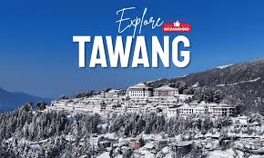
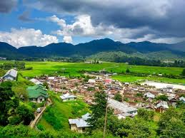
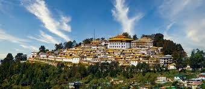

Tawang

A high-altitude town famous for the Tawang Monastery, the largest monastery in India and the second largest in the world, offering breathtaking views of the Himalayas.
Ziro Valley

A beautiful, picturesque valley known for its lush green rice fields, pine groves, and as the home of the Apatani tribe. It is a UNESCO World Heritage Site contender.
Sela Pass

A high-altitude mountain pass that is usually snow-covered, known for the scenic Sela Lake and acting as the main gateway to Tawang.
Namdapha National Park
A large protected area and biodiversity hotspot known for its incredible range of flora and fauna, including the snow leopard, clouded leopard, and tiger.
Itanagar

The state capital, featuring historical and cultural sites like the Ita Fort (a 15th-century fort made of bricks), and the serene Ganga Lake (Gyaker Sinyi).